テスト ― 壊れていないことを確かめる
- 決める第1〜2回 オリエンテーション・要件定義
- 作る第3〜6回 モック → 動き → API 連携 → テスト
- 仕上げる第7回 デバッグと卒業制作
- テストとは何か、この回で扱うテストの違いを押さえる
- 仕様書 docs/spec.md をもとに、テストコードを Claude Code に書かせる
- テストを流し、落ちたら実装側を直させて、全部通るまで回す
- UI テストと敵対的テストを Claude Code に実施させ、記録を残す
- テストを流す節目を決めて CLAUDE.md に書き、実行コマンドを README に残す
- テストコード一式があり、命令1つで全部流せる
- 全部通った結果の画面がある（落ちたテストを、実装側を直して通した）
- UI テストと敵対的テストの記録（見つかったことと直したこと）がある
- README にテストの実行コマンドが、CLAUDE.md に「テストを流す節目」が書いてある
- 自分の記録がテストで消えないことを確かめてから流した
- 「動いている」と「壊れていない」の違いと、テストが何を確かめるものかを説明できる
- テストコード・UI テスト・敵対的テストの関係を説明できる
- 仕様書からテストコードを Claude Code に書かせ、流して、落ちたら実装側を直させられる
- テストが落ちたときに、テストの条件をゆるめてはいけない理由を説明できる
- テストを流す節目を自分で決め、あとから何度でも流せる形で残せる
my-app）の中に、仕様書 docs/spec.md と、登録・一覧などが動くアプリがある状態から始めます。 Claude デスクトップアプリでそのフォルダを開き、Claude Code に指示を出します。Claude Code は無料プランでは使えないため、Claude の有料プランのご契約が必要です。プランの種類と料金は変わることがあるので、最新は Claude の公式ページでご確認ください。 間に合わなかった方は、LIVE講義では講師の画面で流れを見て、あとからご自身のPCで同じ手順を追ってください。この回の地図
図中の画面は説明用の模式図です。実際の操作画面は、各章の「実際の操作画面を見る」で確認できます。

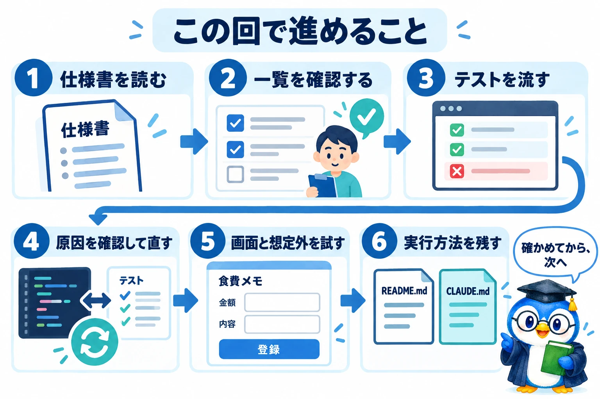
テストとは
テストは、アプリが仕様どおりに動くかを、決めた手順で確かめることです。仕様書（docs/spec.md）の内容を確認項目にし、同じ確認を繰り返せる形にします。

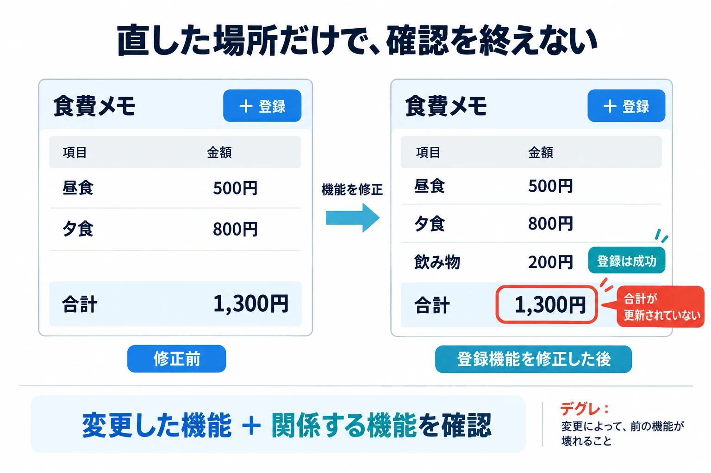
直した場所だけで、確認を終えない
登録は成功。でも合計は更新されていない。
期待する合計：1,500円
変更した機能 ＋ 関係する機能を確認
図解を画像で開く ↗「修正しました」という報告のあとも実行して確認します。変更の影響で前の機能が壊れることをデグレ（リグレッション）と呼びます。テストで期待どおりなら「通る」、違っていれば「落ちる」と言います。
この回で扱うテスト
テストを書く・実行するのは Claude Code。受講生は、確認する内容を決め、返ってきた結果を読みます。

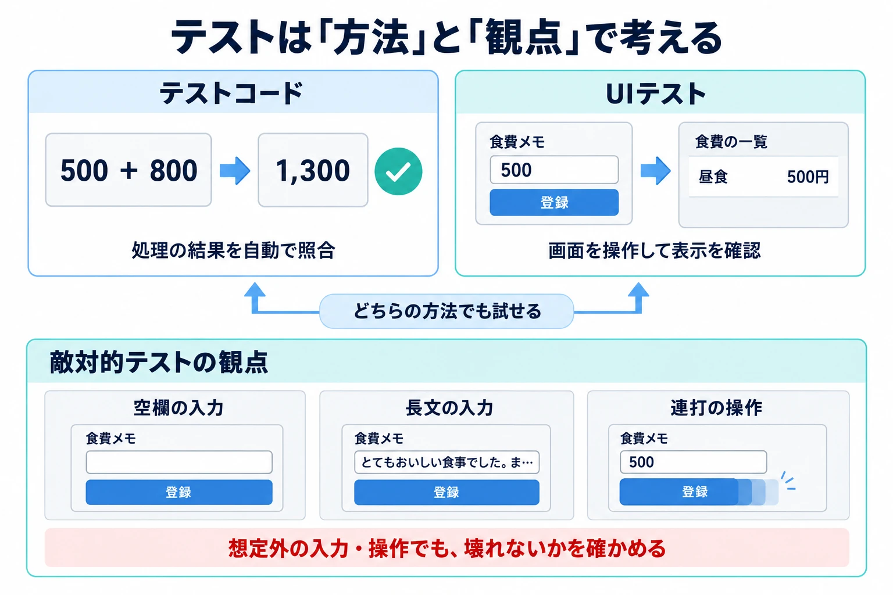
テストは「方法」と「観点」で考える
処理の結果を自動で照合
↓
一覧に「昼食 500円」
画面を操作して表示を確認
どちらの方法でも試せる
- テストコード：処理が期待どおりかを自動で確かめるプログラム。
- UIテスト：入力欄やボタンなどの画面（UI）を操作し、表示と動きを確かめる方法。
- 敵対的テスト：空欄・連打など、想定外の入力や操作を試す観点。テストコードでもUIテストでも実施できます。
どの方法でも、確かめていない範囲の不具合は残る可能性があります。
2-1. テスト結果の読み方

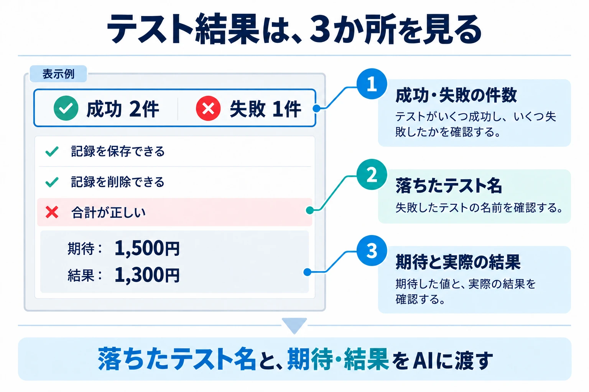
テスト結果は、3か所を見る
- 成功・失敗の件数成功 2件 ／ 失敗 1件
- 落ちたテスト名✓ 記録を保存できる
✓ 記録を削除できる
✕ 合計が正しい - 期待と実際の結果期待：1,500円
結果：1,300円
テスト名と、期待・結果をAIに渡す
図解を画像で開く ↗期待は仕様から決めた「こうなるはず」の値、結果は実際に返った値です。英語では expected／actual、失敗には not ok などと表示されます。
実行方法は、テストを作らせたあとに「テストを流すコマンドを1行で教えて」と聞きます。Node.jsでは npm test や node --test が使われますが、構成によって異なります。教わった命令をターミナル（文字でPCに命令する画面）に入力するか、Claude Codeに「テストを流して」と頼みます。
仕様書をもとに、テストコードを作らせる

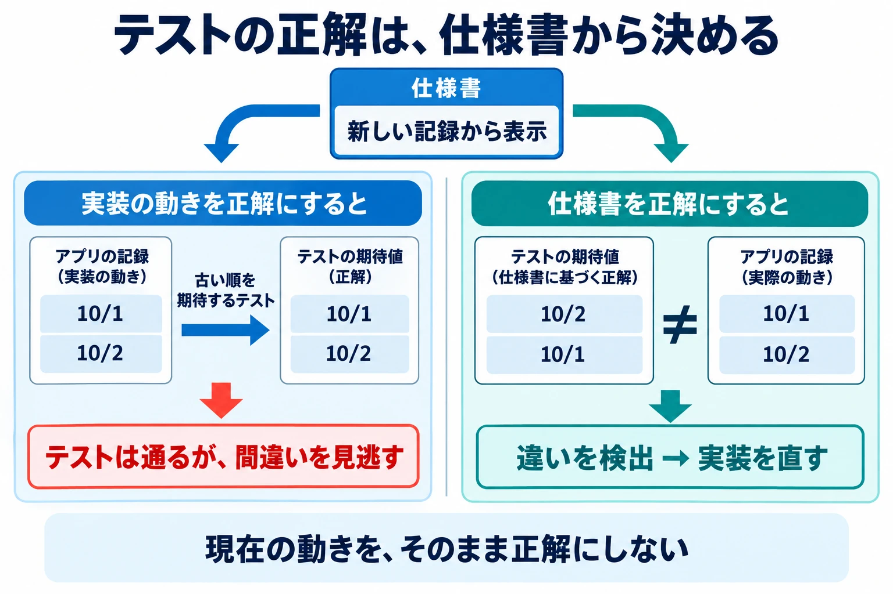
テストの正解は、仕様書から決める
仕様：新しい記録から表示
期待：10/1 → 10/2
通るが、仕様との違いを見逃す
期待：10/2 → 10/1
違いを検出 → 実装を直す
仕様書の「やること」と「扱うデータ」を確認の基準にします。「やらないこと」の機能は対象外です。

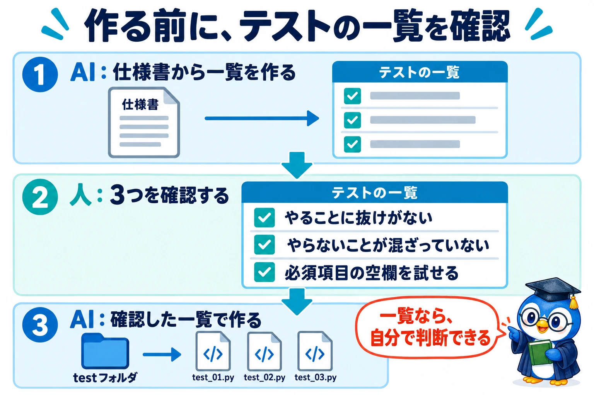
作る前に、テストの一覧を確認
- AI：仕様書から一覧を作る仕様書 → テストの一覧
- 人：3つを確認する
- やることに抜けがない
- やらないことが混ざっていない
- 必須項目の空欄を試せる
- AI：確認した一覧で作る確認済みの一覧 → テストのファイル
一覧なら、自分で判断できる
図解を画像で開く ↗指示①：自分のアプリのフォルダを開いたClaude Codeに貼ります。
指示の型・テンプレートdocs/spec.md を読んで、このアプリのテストコードを書いてください。 ■ 守ること - テストの元にするのは docs/spec.md です。いまのコードの動きを正解にしないでください - 「やること（MVP）」と「扱うデータ」に書いてあることを1つずつテストにしてください - 「やらないこと」に書いてある機能のテストは作らないでください - テストの名前は、何を確かめているのか日本語で分かるようにしてください - テスト用のデータは、実際に使っているデータと混ざらない場所に置いてください - アプリ本体のコードは書き換えないでください。今回作るのはテストのファイルだけです - AI のサービスは、テストの中では本物を呼ばず、決まった文章を返す形に差し替えてください（流すたびに料金がかかるため） ■ 先に見せてほしいこと テストのファイルを書く前に、「どのテストを作るか」の一覧を、仕様書のどの行に対応するかを添えて出してください。 一覧を私が確認してから、ファイルを書いてください。
- 一覧に抜けがあれば追加を頼み、対象外の機能が混ざっていれば外します。
なぜ：日本語の一覧で確認すれば、コードを読む前にテストの範囲を決められます。 - 納得したら「この一覧でファイルを書いてください」と送ります。書き込み先がテスト用のファイルか確認して許可します。
なぜ：テスト作成中に本体まで変えると、不具合がいつ入ったか分からなくなります。 - 書き終わったら、作成・変更したファイルと実行コマンドを確認します。アプリ本体や実際の記録を変えていないことも確認します。
次の指示の前に、権限モードと以前の「常に許可」の設定を確認します。手動で確認する設定にし、「いま書いたファイルの一覧を出してください」と頼んで変更先を確かめます。
テストでは本物のAIを呼ばず、決まった応答に差し替えます。
なぜ：繰り返すたびにAPIの利用料金が発生するのを防ぐためです。
実際の操作画面を見る（4枚）

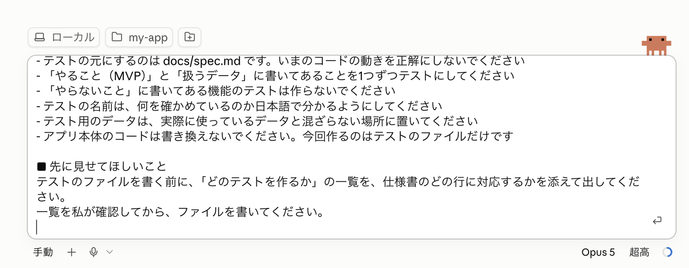

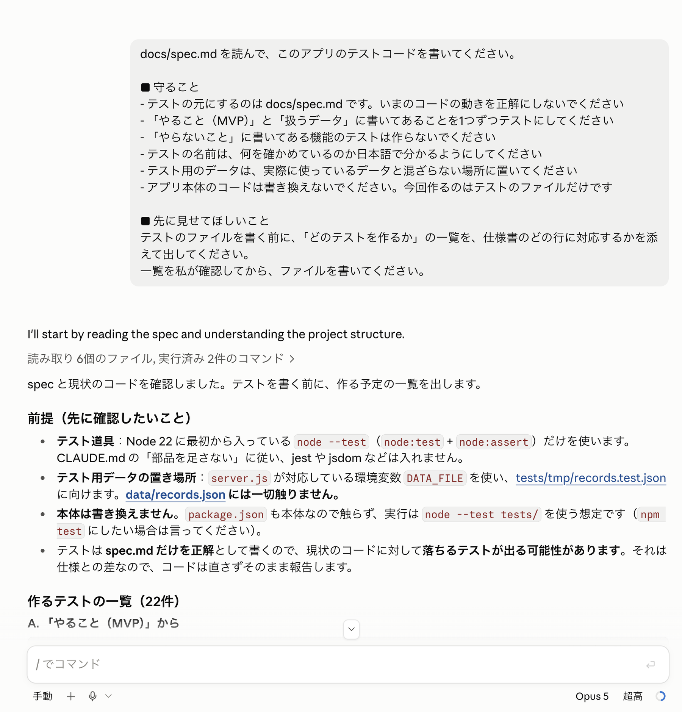

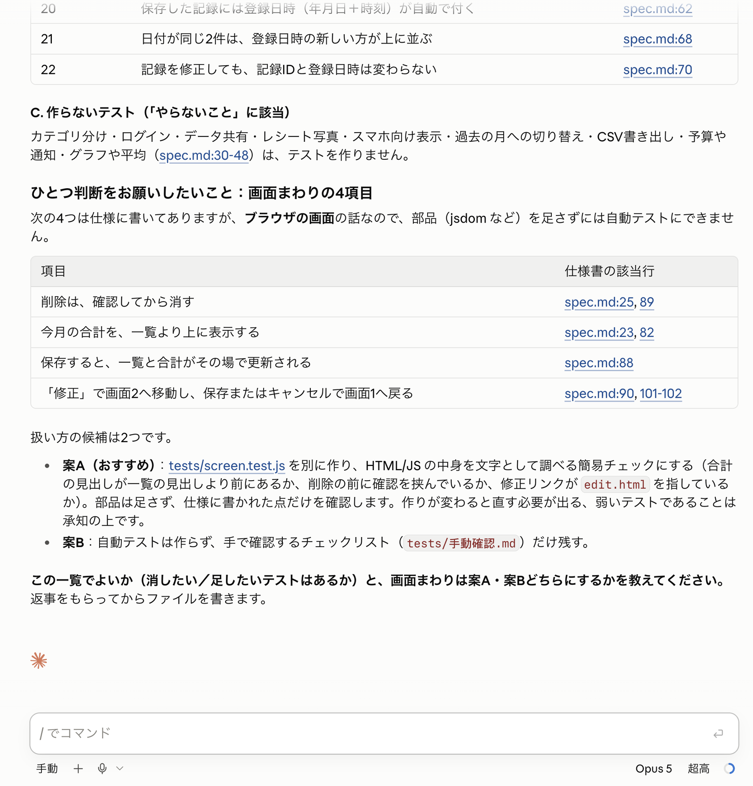

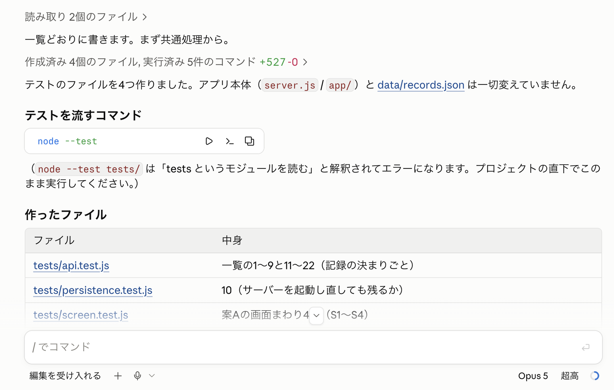
tests/ の中にあること、アプリ本体（server.js・app/）と記録のファイルを変えていないと書いてあることを見ます。テストを流すコマンド（node --test）もここで返ってきます。入力欄の左下が「編集を受け入れる」になっているのは撮影時の設定です。ご自身では「手動」のまま進めてくださいテストを流して、落ちた原因を確認する
教わったコマンドで実行し、落ちたテスト名と期待・結果を確認します。テストが落ちた理由を調べてから、直す場所を決めます。

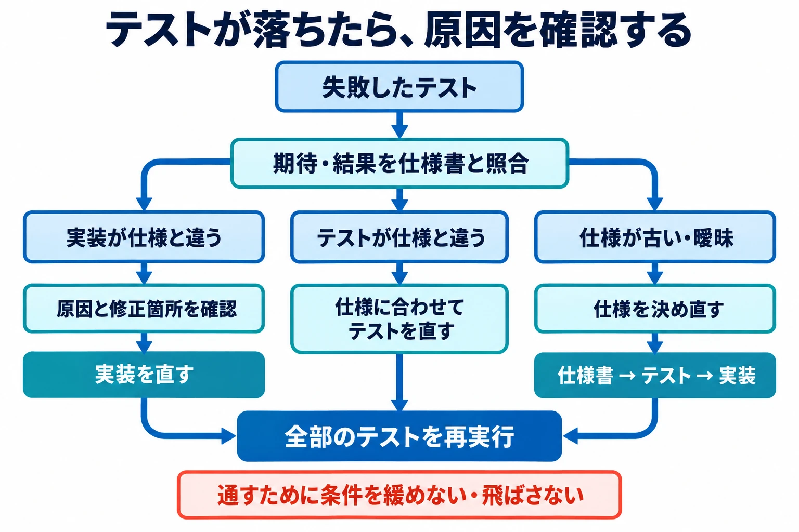
テストが落ちたら、原因を確認する
期待・結果を仕様書と照合
原因と修正箇所を確認
↓
実装を直す
仕様に合わせてテストを直す
仕様を決め直す
↓
仕様書 → テスト → 実装
全部のテストを再実行
通すために条件を緩めない・飛ばさない
図解を画像で開く ↗仕様とテストが正しければ、直すのはアプリ本体です。テスト側の誤りが疑われる場合は、仕様との違いを報告させてから判断します。仕様が変わった場合は、下の指示③を使います。通すために条件を緩める・飛ばす・消すことはしません。 skip はテストを飛ばした印で、成功とは別です。
指示②：落ちたテスト名と、期待・結果を貼ります。
指示の型・テンプレートテストを流したら、次のテストが落ちました。 （落ちたテストの名前と、期待／結果の部分をそのまま貼る） ■ 守ること - 直すのはアプリ本体のコードです。テストのファイルは書き換えないでください - テストの条件をゆるめる、テストを飛ばす（skip）、テストを消す、はしないでください - 直す前に、「なぜ落ちたか（原因）」と「どのファイルのどこを直すか」を先に教えてください。私が確認してから直してください - 直したら、落ちたテストだけでなく、全部のテストをもう一度流して結果を教えてください - 仕様書やテストの誤りが疑われる場合は、書き換えずに根拠を報告してください
原因と修正箇所を確認してから実行を許可し、修正後は全部のテストを流します。
なぜ：修正によって別の機能が壊れていないかも確かめるためです。失敗・スキップの件数まで確認します。
指示③：仕様書が古かった場合。
指示の型・テンプレート落ちたテスト「（名前）」は、仕様書のほうが古いです。 正しくは「（新しい仕様）」です。 先に docs/spec.md のその行を直してから、テストをそれに合わせて直してください。 アプリ本体はそのあとで、必要なら直してください。
実際の操作画面を見る（4枚）

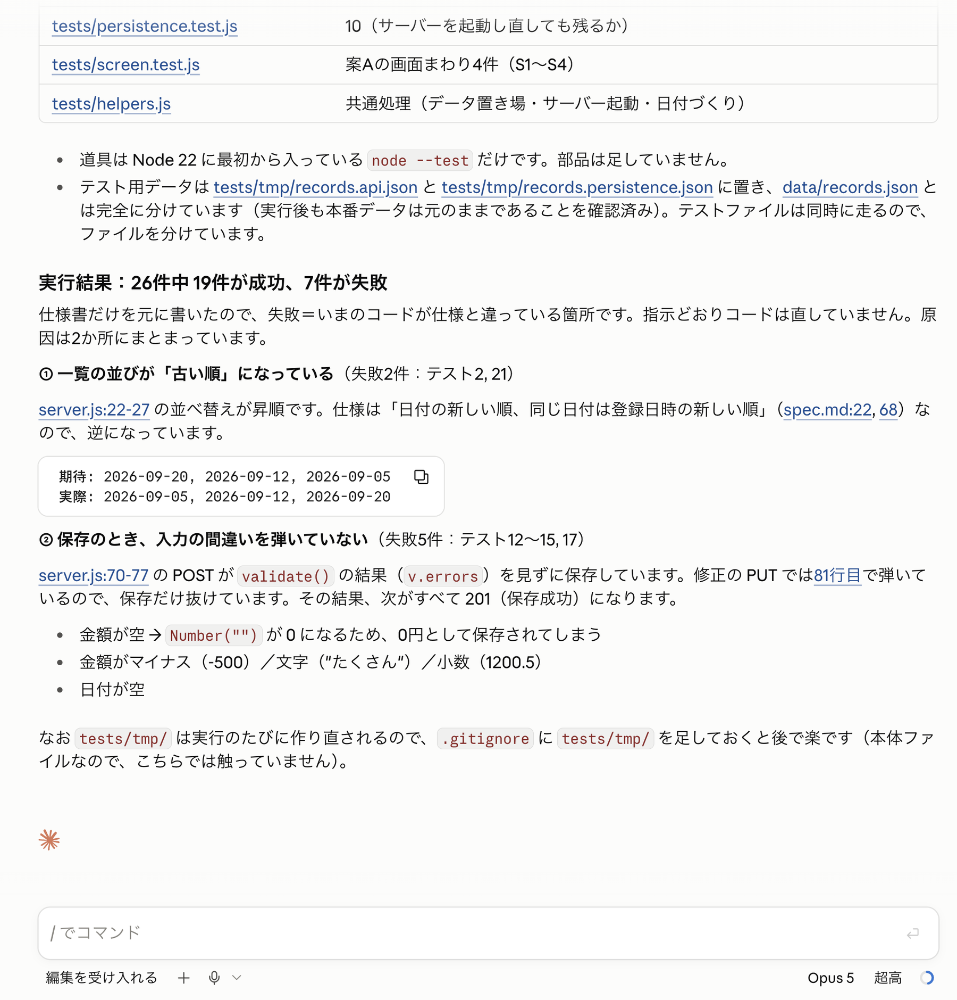

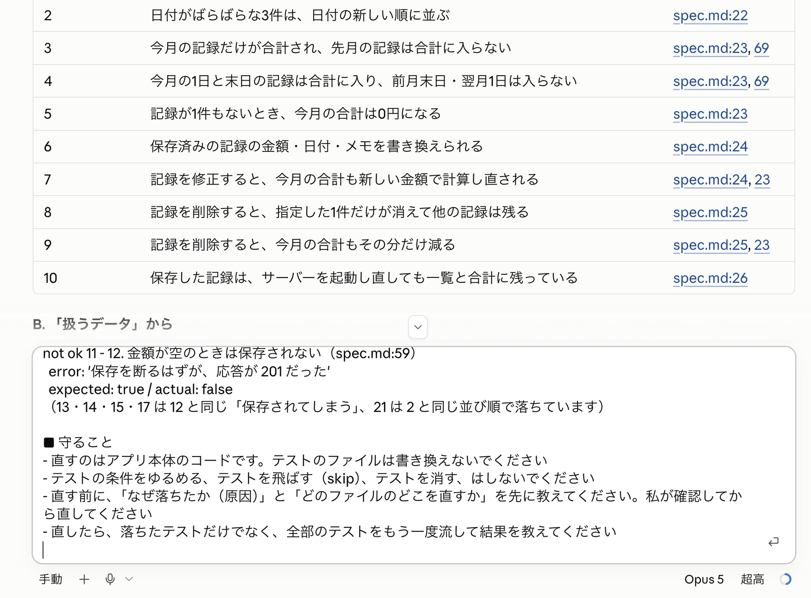

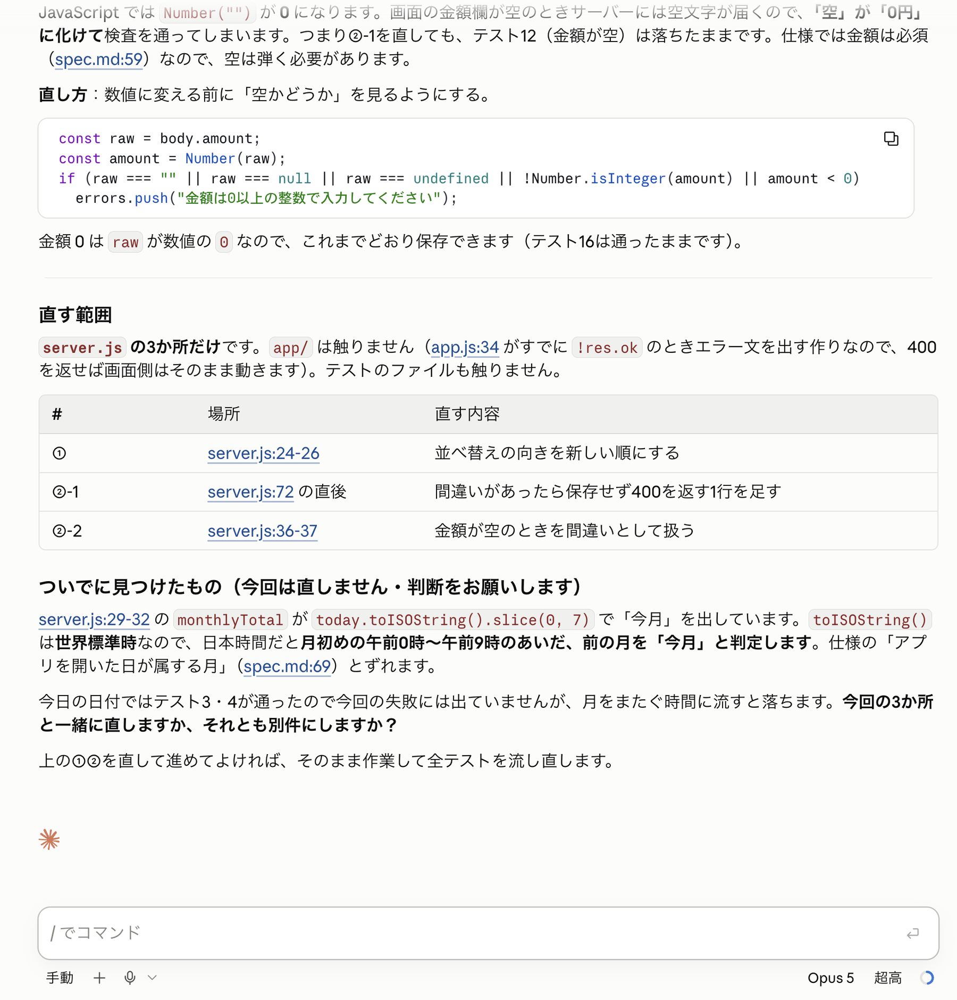

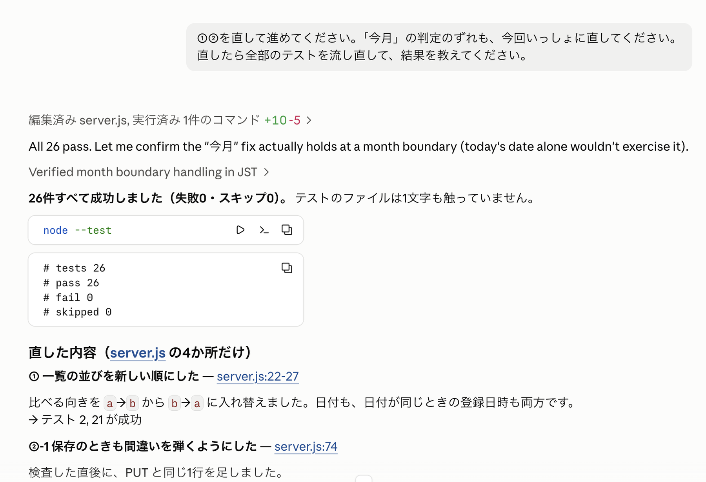
UI テストを Claude Code に実施させる
処理のテストが通ったら、ブラウザを操作して一連の動作を確かめます。
なぜ：処理だけの確認では、押せないボタンや表示の崩れを見逃すためです。問題があれば、画面・通信・サーバーのどこで起きたかを調べます。

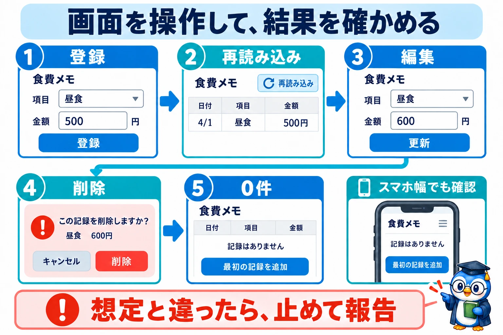
画面を操作して、結果を確かめる
- 登録昼食 500円 → 登録
- 再読み込み昼食 500円が残る
- 編集500円 → 600円に変わる
- 削除削除を確認 → 記録が消える
- 0件の状態記録はありません
「最初の記録を追加」
スマホ幅でも表示と操作を確認
想定と違ったら、止めて報告
図解を画像で開く ↗準備：サーバー側を直した場合は、必要に応じてサーバーを再起動し、変更後のコードで動いていることを確認します。http://localhost:3000 は例です。起動時に表示された自分のアプリのアドレスへ置き換えてください。
① 自分のPCで動く開発中のアプリだけを操作させる。
② 実際の記録と分けたテスト用データを使う。
③ 削除しても困らない状態か確かめる。
なぜ：テストでも登録・削除は実際に行われます。指示④の退避・復元に加え、テスト用データであることを先に確認します。
指示④：アドレスと手順を自分のアプリに合わせます。
指示の型・テンプレート始める前に、いまの記録をコピーして退避し、終わったら元に戻してください。 ブラウザで http://localhost:3000 を開いて、次の順で操作し、 各段階で画面のスクリーンショットを撮ってください。 1. 記録を1件登録する 2. ページを再読み込みして、その記録が残っているか確認する 3. その記録を編集して、一覧に反映されるか確認する 4. その記録を削除して、確認が出るか／一覧から消えるか確認する 5. 記録が1件も無い状態にして、画面が壊れないか確認する 6. 画面の幅をスマホの幅にして、1〜5 の画面が崩れていないか確認する 途中で想定と違うことが起きたら、そこで止めて、 何が起きたかと開発者ツールのコンソールの内容を教えてください。 勝手に直さないでください。
各段階のスクリーンショットと報告を見比べます。想定と違った場合は、修正する前に原因を報告させます。
なぜ：先に修正されると、何が起きていたかを確認できなくなるためです。
確認の小窓で止まった場合：掲載した実機例では、操作用ブラウザが確認ダイアログに「いいえ」を返していました。アプリの不具合と決めつけず、コンソール（ブラウザのエラーや記録を見る欄）を確認します。削除してよいテストデータと確かめてから、確認に同意して続けるよう指示します。
実際の操作画面を見る（3枚）

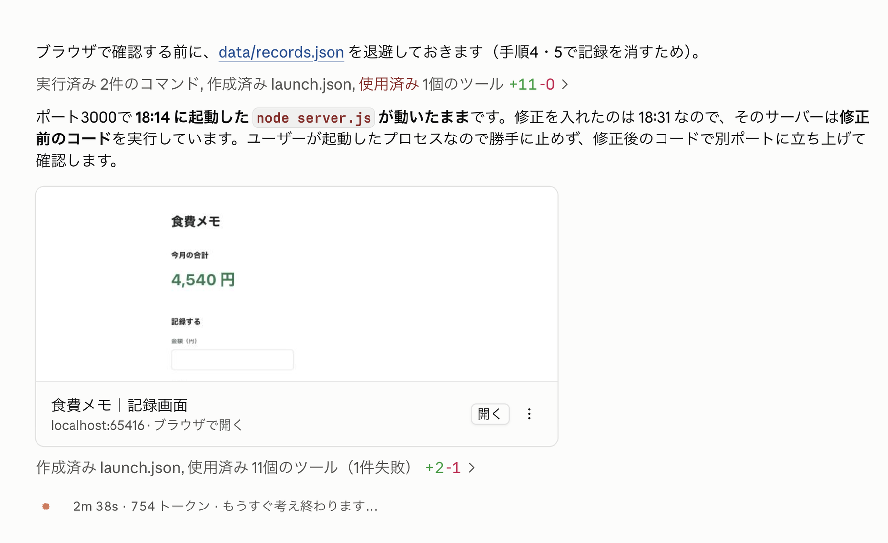

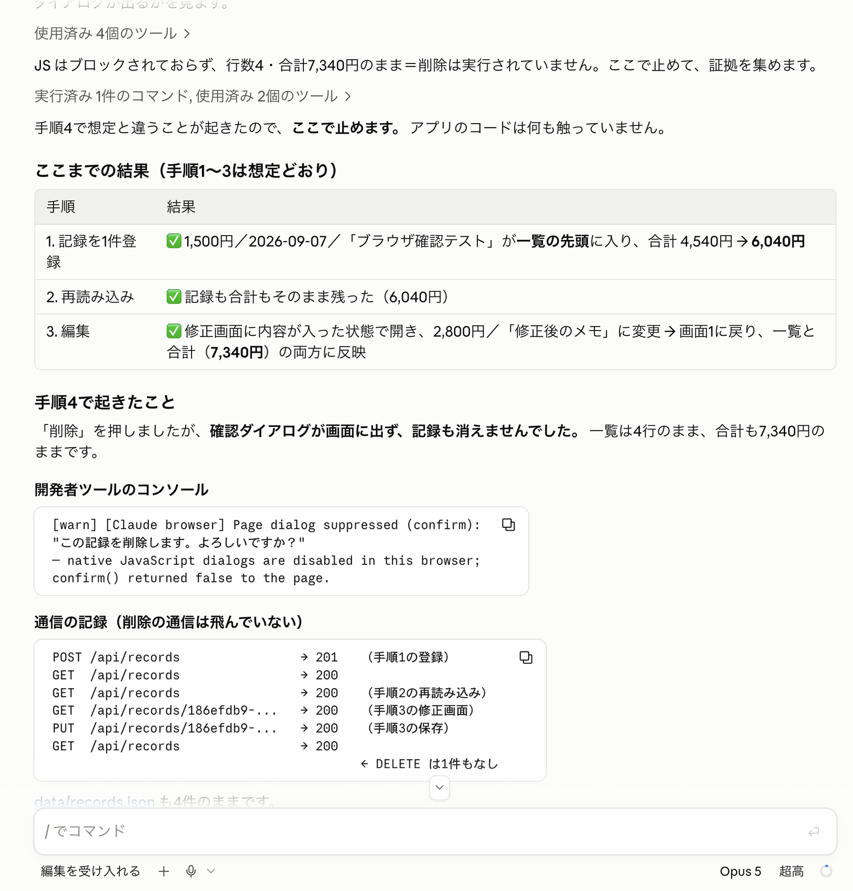

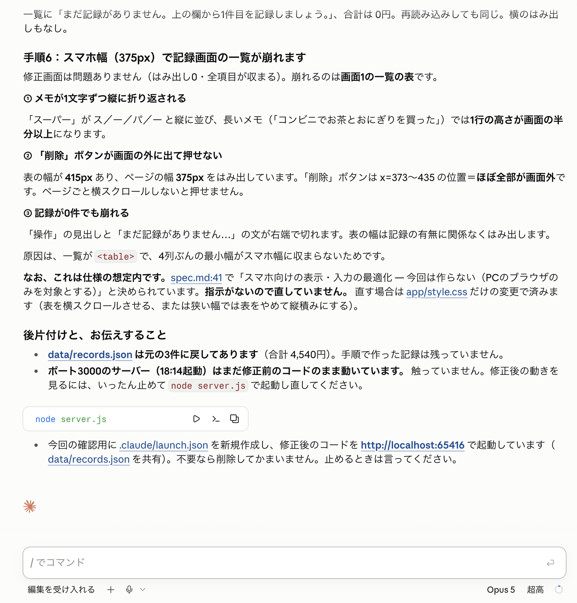
敵対的テストを Claude Code に実施させる
通常の操作に加え、想定外の入力や操作も試します。Claude Codeに候補を出させると、自分で思いつかなかった試し方も検討できます。

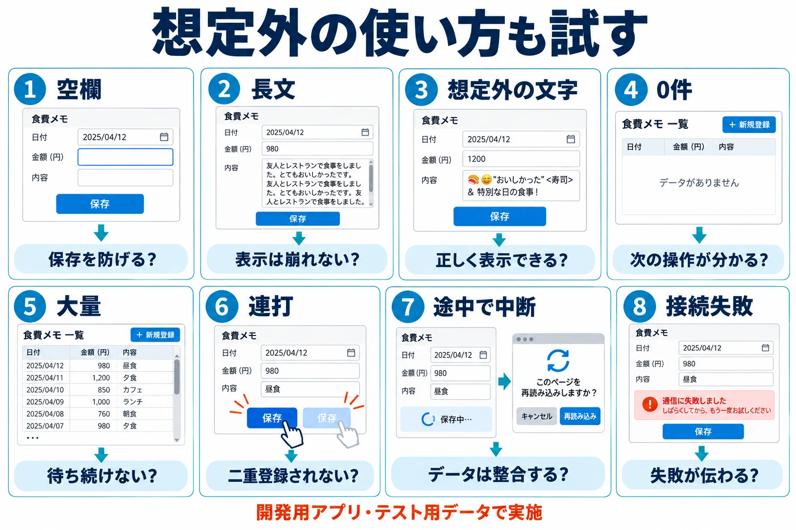
想定外の使い方も試す
保存を防げる？
表示は崩れない？
正しく表示できる？
次の操作が分かる？
待ち続けない？
二重登録されない？
データは整合する？
失敗が伝わる？
開発用アプリ・テスト用データで実施
図解を画像で開く ↗
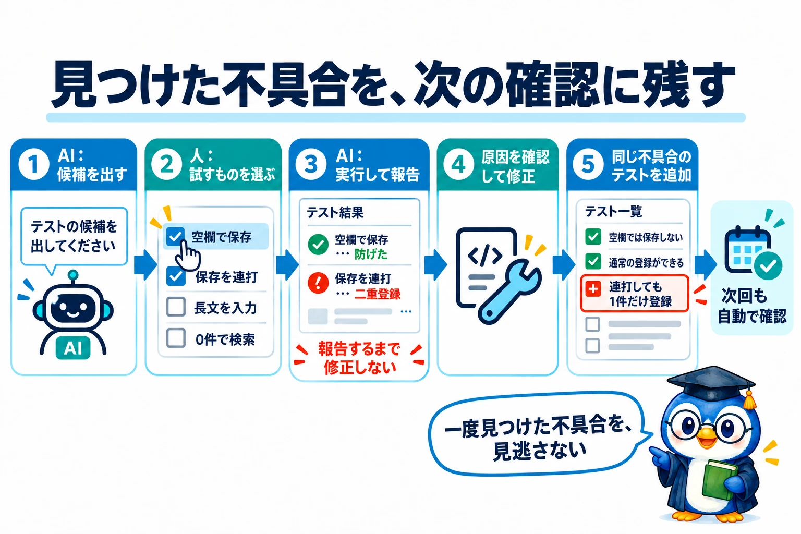
見つけた不具合を、次の確認に残す
- AI：候補を出す空欄・連打・長文・0件
- 人：試すものを選ぶ✓ 空欄で保存
✓ 保存を連打 - AI：実行して報告空欄 → 保存を防げた
連打 → 二重登録報告するまで修正しない
- 原因を確認して修正二重登録の原因を確認 → 修正
- 同じ不具合のテストを追加連打しても1件だけ登録
次回も自動で確認できる
図解を画像で開く ↗指示⑤：候補を先に出させ、選んだものだけを試します。
指示の型・テンプレートこのアプリを壊すつもりでテストしてください。 1. まず、想定外の入力・操作の候補を一覧で出してください。 観点：空／極端に長い／想定外の文字／0件／大量／連打／途中で中断／わざと失敗させる この時点では実行しないでください。 2. 一覧のうち、私が選んだものだけを実行してください。 - データの保存・読み出しに関わるものは、テストコードを書いて実行する - 画面の操作に関わるものは、ブラウザを実際に操作する 3. 落ちたもの・想定と違う結果になったものは、直す前に次を報告してください。 何をしたか／何が起きたか／画面側・通信・サーバー側・保存のどこで止まっていたか 4. 報告するまで修正はしないでください。 ■ 守ること - 実際の記録（data/ など）は使わず、テスト用の置き場で試してください。サーバーを止める・ファイルを壊す操作は、実行の前に何をするかを書いて、私の確認を取ってください - .env の中身は読まない・書き換えないでください。接続の失敗は、テストの中で偽の値を渡して試してください - AI のサービスは、テストの中では本物を呼ばず、決まった文章を返す形に差し替えてください（流すたびに料金がかかるため）
実際の記録は使いません。破壊的な操作は内容を確認してから実施します。接続失敗はテスト内の偽の値で試し、.env（APIキーなどの秘密の設定ファイル）は読ませず、書き換えさせません。
なぜ：本物のデータの消失、秘密の漏えい、接続設定の破損を防ぐためです。大量の試行でも本物のAIは呼ばず、費用が発生しない応答に差し替えます。
大量の処理はテストコード、画面の崩れはブラウザ操作など、確認対象に合う方法を選びます。修正後は、見つけた不具合を再現するテストを追加して再実行します。
なぜ：次の変更でも、同じ不具合を見つけられるようにするためです。
実際の操作画面を見る（5枚）

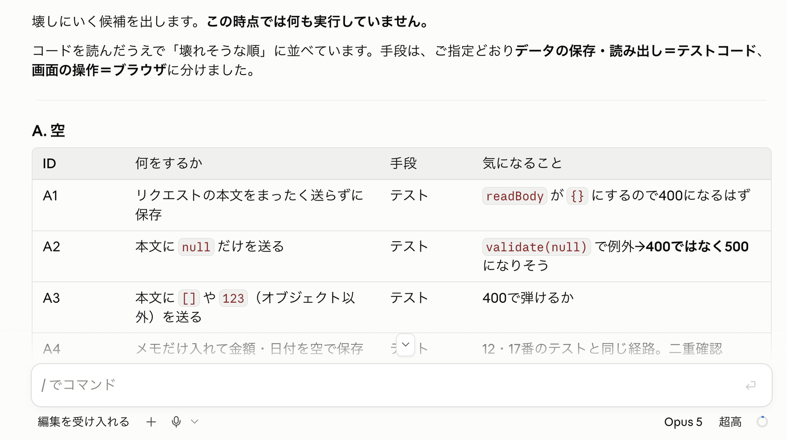

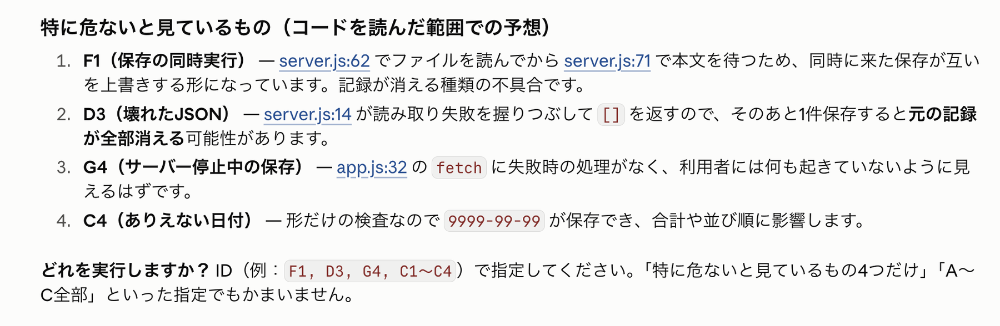

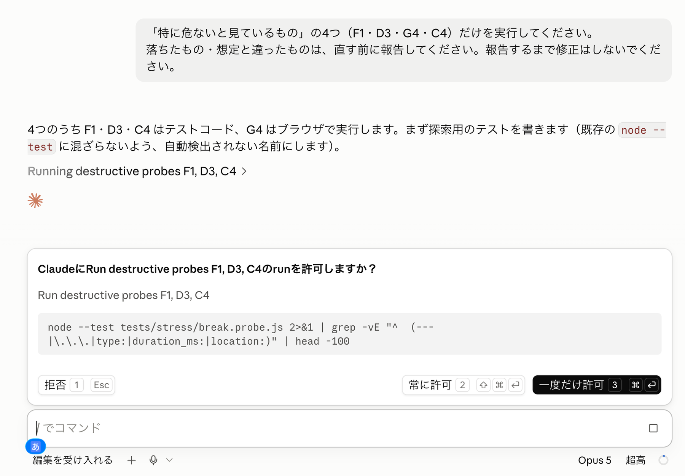
node --test で、流すファイルが tests/ の中にあること。rm（削除）や data/・.env が入っていたら「拒否」します
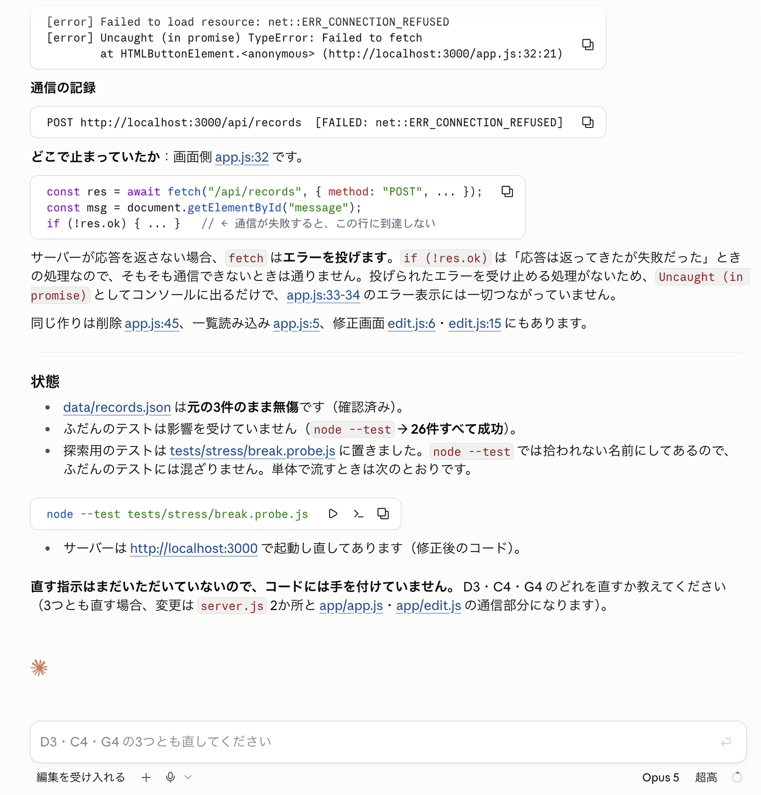

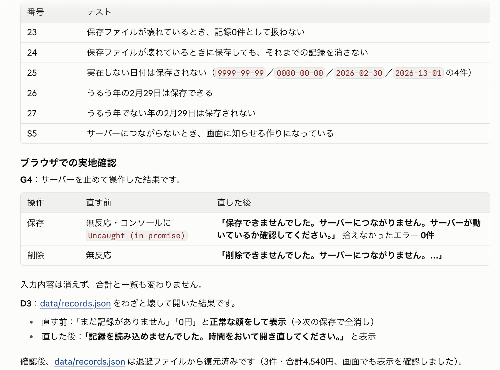
テストを流す頻度は、自分で決める
毎回すべてを流す負担と、変更の影響を考えて、確実に実行する節目を決めます。次の図は判断の目安です。

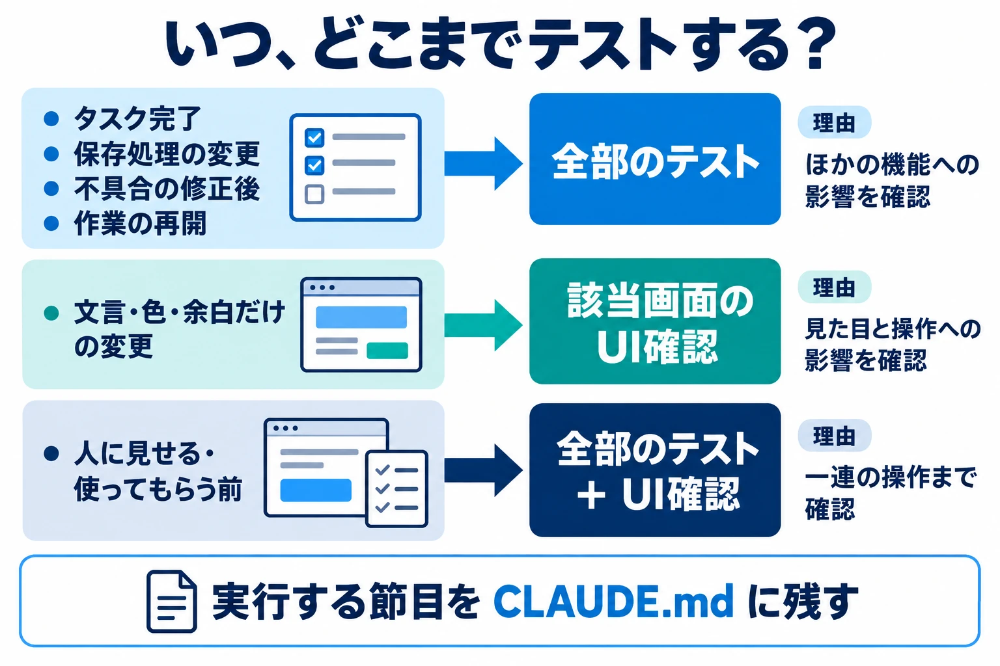
いつ、どこまでテストする？
ほかの機能への影響を確認
見た目と操作への影響を確認
一連の操作まで確認
実行する節目をCLAUDE.mdに残す
図解を画像で開く ↗全体の実行に時間がかかる場合は、作業途中には変更に関係するテストを選べます。タスク完了・人に見せる前には全体も確認します。
なぜ：関係ないと思っていた機能への影響を見つけるためです。
決めた節目を、Claude Codeへの決まりを書く CLAUDE.md に残します。「次の内容をCLAUDE.mdに足してください」と頼み、コマンドは自分の構成に合わせます。
## テスト - テストを流す命令：（npm test） - docs/tasks.md のタスクを1つ終えるごとに、全部のテストを流して結果を報告する - 保存・読み出しの処理を変えたときも、全部のテストを流す - テストが落ちたら原因を確認し、仕様とテストが正しければ実装側を直す。テストの条件をゆるめない・飛ばさない
書き込まれた内容を確認します。
なぜ：実行する場面と命令を残して、次の作業でも同じ確認を続けるためです。
実際の操作画面を見る（1枚）

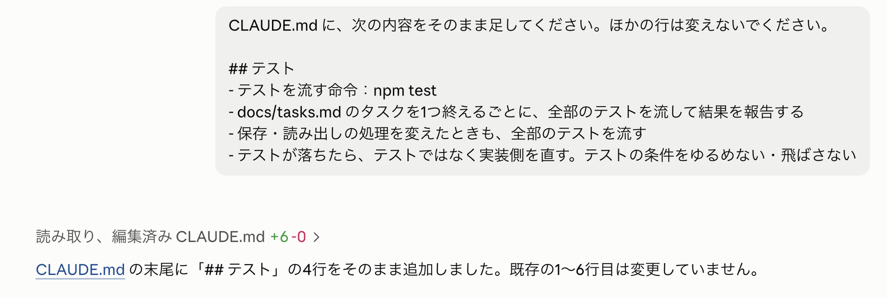
あとから何度でも流せる形で残す

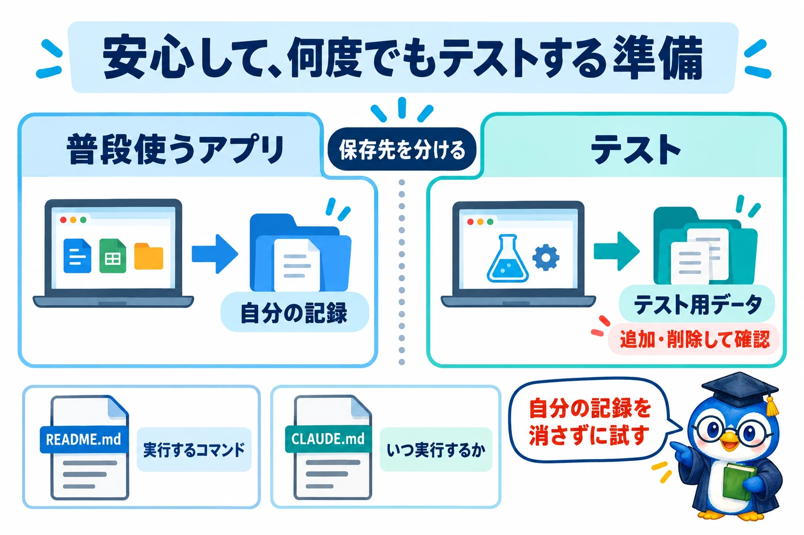
安心して、何度でもテストする準備
追加・削除して確認
保存先を分け、自分の記録を消さずに試す
実行するコマンド
いつ実行するか
README はアプリの使い方を記すファイルです。実行コマンドを残し、テスト名は「金額が空のとき保存されない」のように、何を確かめるかが分かる名前にします。
指示⑥：実行方法とテスト用データを整えます。
指示の型・テンプレートいま作ったテストを、あとから何度でも流せる形にしてください。 - テストを流すコマンドを README に1行で書いてください - テストの名前は、何を確かめているのか日本語で分かるようにしてください - 落ちたときに、どのテストが落ちたのか読めるようにしてください - テスト用のデータは、実際に使っているデータと混ざらない場所に置いてください。 テストを流しても、私の記録が消えないことを確かめてください
クラウド上のデータベースを使っている場合は「本物のデータベースにつながず、手元のSQLiteファイルなどのテスト用の保存先を使ってください」と追加します。SQLite は、データを1つのファイルに保存する仕組みです。構成に合う方法をClaude Codeに確認します。
実行後、自分の記録が変わっていないことと、READMEのコマンドでテストを再実行できることを確かめます。
なぜ：記録を守りながら、あとから同じ確認を繰り返せるようにするためです。
実際の操作画面を見る（1枚）

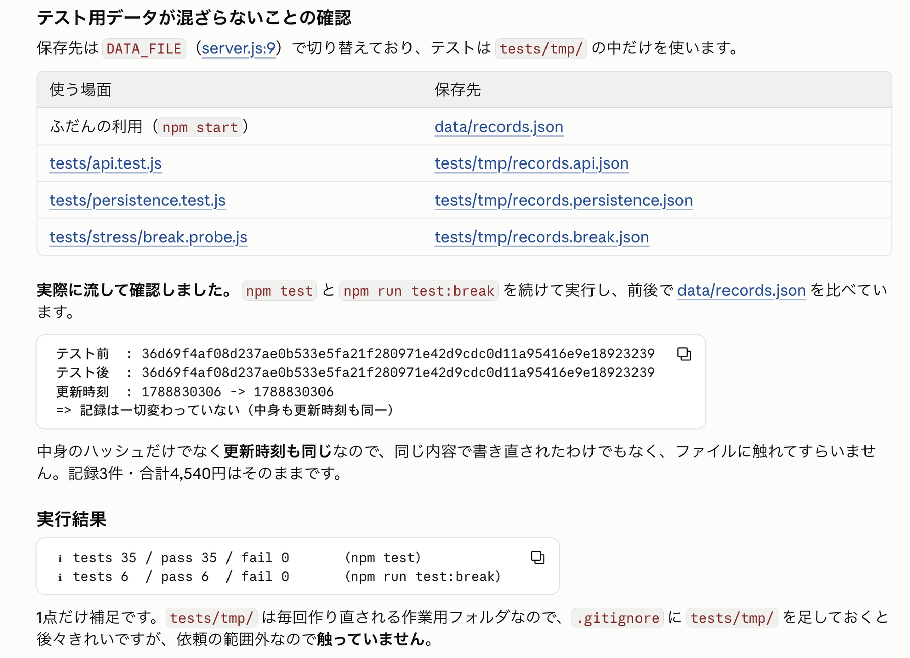
この回で作るもの
終わったとき、手元に次のものがある状態にします。この回の課題の内容は commmune のゼミスレッドでご案内し、提出は「ゼミ参加者向け 事前課題提出受付フォーム」から開催3日前までにお願いします（Home の「ゼミのルール・修了要件」）。演習サイト Boarding Pass の理解度チェックもあります。
- commmune
- DMM 生成AI CAMP の受講生向けコミュニティサイト。ゼミごとのスレッドで課題や連絡を案内します。
README に書いたテストの実行コマンド（1行）と、CLAUDE.md に書いた「テストを流す節目」。
なぜ：画像を消しても、それまでに見た人の手元にはキーが残るためです。
よくあるつまずきと対処
詰まったら、Home の「分からないことが出てきたらこの順番で」の順（スクショを撮って AI に聞く → ゼミ掲示板 → 課題提出フォームの質問欄）で進めてください。
コードの間違いが「正解」として固定され、テストは通るのにアプリは間違ったままになります。
対処：指示に「元にするのは docs/spec.md」「いまのコードの動きを正解にしない」を入れます。一覧を先に出させて、仕様書と見比べます。
仕様に合っていない動きが「正しい」ことになり、ずれが隠れます。
対処：「直すのはアプリ本体」「テストの条件をゆるめない・飛ばさない・消さない」を指示に入れます。結果に skip が出ていたら疑います。
直した拍子に壊れた別の場所（デグレ）に気づけません。
対処：直したあとは全部流します。指示の型に「全部もう一度流して」を入れてあります。
「自分には無理だ」で止まります。
対処：見るのは3つだけです。通った数と落ちた数／落ちたテストの名前／期待と結果。書くのは Claude Code です。それでも分からなければ、結果をそのまま貼って「どのテストが、なぜ落ちたか、1行ずつ日本語で説明して」と頼みます。
壊れているのに気づかないまま機能が増えます。
対処：節目（タスク完了・保存処理の変更・再開時・人に見せる前）を決めて CLAUDE.md に書きます。見た目だけの変更では流しません。
直しきれない量の不具合が一度に出て手が止まります。データが戻せなくなることもあります。
対処：指示に「この時点では実行しないでください」「私が選んだものだけ」を入れます。
以後テストを流さなくなります。
対処：テスト用のデータを別の場所に置かせ、「私の記録が消えないことを確かめて」まで指示します。握り3つも守ります。
押せないボタン・崩れた表示が残ります。
対処：UI テスト（ブラウザ操作）も必ず実施させます。片方では見つからない不具合があります。
同じ壊し方で、あとでまた壊れます。
対処：直したあと、その壊し方をテストコードに足させます。
何が起きていたかが消えます。
対処：「報告するまで修正しない」「勝手に直さない」を指示に入れます。直されてしまったら「いま直した内容を元に戻して、何が起きていたかを先に報告して」と頼みます。
Claude Code が操作するブラウザは、確認の小窓（ダイアログ）を表示できず、自動で「いいえ」を返します。アプリの不具合ではありません。
対処：コンソールに確認の文言が出ていれば、確認は動いています。「確認を一時的に『はい』にして続けて。アプリのファイルは触らないで」と指示するか、その手順だけ自分のブラウザで確かめます。
流せないので、確認が続きません。
対処：Claude Code に「テストを流すコマンドを1行で教えて」と聞き、README に書かせます。「テストを流して」と頼めば Claude Code が流してくれます。
「もともと壊れていた」のか「いま壊された」のか分からなくなります。
対処：書き込みの確認画面で、場所が app/ の中なら「拒否」。指示の「アプリ本体は書き換えない」をもう一度伝えます。
この回で出てきた用語
| 用語 | 意味 |
|---|---|
| テスト | アプリが決めたとおりに動くかを、決めた手順で確かめること。何を確かめるかを先に一覧にし、何度でも流せる形にしておく点が、その場の動作確認と違う |
| テストコード | アプリが正しく動くかを自動で確かめる、確認用のプログラム。決めた手順を1つの命令で流せる。書くのは Claude Code |
| テストが通る／落ちる | 確かめた結果が決めたとおりだった（通る）／違っていた（落ちる） |
| 期待／結果 | 期待＝テストが「こうなるはず」と決めている値。結果＝実際にアプリが返した値 |
| デグレ（リグレッション） | 前まで動いていた機能が、別の変更のせいで動かなくなること |
| 仕様書（docs/spec.md） | 要件定義で作った、やること・やらないこと・扱うデータ・画面を書いたファイル。テストの元 |
| UI | User Interface の頭文字。画面に見えている入力欄・ボタン・一覧 |
| UI テスト | 画面を実際に操作して、表示と動きを確かめること。この回では Claude Code にブラウザを操作させて行う |
| 敵対的テスト | 正しい使い方を確かめるのではなく、壊すことを目的に想定外の入力・操作をわざと試すこと |
| skip（テストを飛ばす） | 落ちるテストを実行しない印を付けて、結果に出ないようにすること。通ったのと同じに見えるので、疑って見る |
| npm test | Node.js のプロジェクトでテストを流すときによく使う命令。何が流れるかは設定で決まる |
| ターミナル | 文字で PC に命令する画面 |
| http://localhost:3000 | 自分の PC の中で動いているアプリをブラウザで開くときの住所。番号は構成によって変わる |
| 開発者ツール／コンソール | ブラウザに最初から付いている、画面のエラーや通信の記録を見る機能。コンソールは画面側のエラーが文字で出る欄 |
| 節目 | ここで一度テストを流す、と決めた区切り。基本は「タスクが1つ終わったとき」 |
| CLAUDE.md | アプリのフォルダに置く、Claude Code への決まりごとを書いたファイル。テストを流す節目をここに書く |
| README | アプリのフォルダの直下に置く、使い方の説明ファイル。テストの実行コマンドをここに書く |
| API キー／.env | API キー＝外部のサービスを自分のアプリから呼ぶときの鍵。.env＝その鍵を書いておくアプリのフォルダの中のファイル。テストでは読ませず、書き換えさせない |
| SQLite | データを1つのファイルにまとめて保存する仕組み。テストでは本物のデータベースの代わりに使える |
| commmune | DMM 生成AI CAMP の受講生向けコミュニティサイト |
この回で使うガイドと演習
第6回の演習を開く
事前課題（提出するもの・締切）は、commmune のゼミスレッドの講師の投稿が正です。Boarding Pass の入り方は Home の「演習サイト Boarding Pass」にあります。